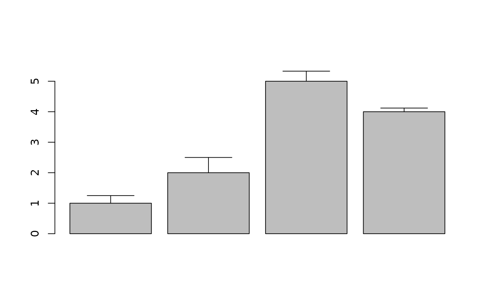
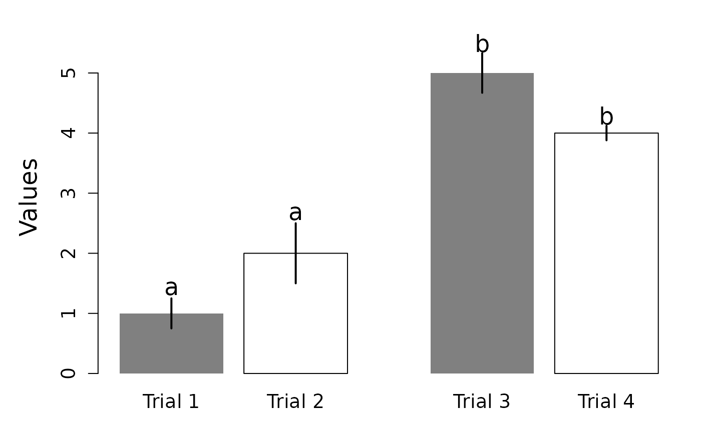

Dynamite Plots
dynamitePlot.RdCreates dynamite plots.
Arguments
- height
A vector of values describing the heights of the rectangular bars which make up the plot.
- error
A vector of values indicating the length of error bars.
- names.arg
A vector of names to be plotted below each bar or group of bars. If this argument is omitted, then the names are taken from the
namesattribute ofheight.- significance
A character vector giving the group significance for each value.
- ylim
Limits for the y axis. By default,
ylimusesc(0, maxLim), wheremaxLimis the maximum height + error multiplied by a factor of 1.1.- sym
Logical. Whether to draw lower error bars.
- head
A numeric, which gives the approximate width of the head, relative to the bar width.
- lwd
The line width of the error bars, a positive number, defaulting to
par("lwd")(usually 1).- cex.sig
The magnification to be used for significance groups relative to the current setting of
cex(which defaults to1).- ...
Arguments to be passed to
barplot.
Note
Ben Bolker wrote an extensive discussion of the advantages and disadvantages of dynamite plots here: http://emdbolker.wikidot.com/blog:dynamite
Examples
values <- c(1, 2, 5, 4)
errors <- c(0.25, 0.5, 0.33, 0.12)
names <- paste("Trial", 1:4)
sig <- c("a", "a", "b", "b")
dynamitePlot(values, errors)

par(mar = c(3, 5, 1, 1) + .1)
dynamitePlot(values, errors, names.arg = names, significance = sig,
ylab = "Values", sym = TRUE, cex.lab = 1.5, cex.axis = 1.2,
cex.names = 1.2, cex.sig = 1.5, space = c(0, 0.2, 0.8, 0.2),
lwd = 2, head = 0, col = c(grey(0.5), "white"), border = c(NA,
"black"))
